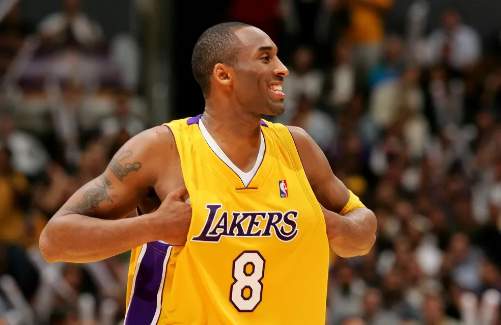

Em seu ano de estreia na NBA, o astro usou a famosa dourada com roxo em cinco jogos, incluindo dois de playoffs
Logo no início de uma carreira brilhante, Kobe Bryant, carregava, junto com seu nome, o número 8 nas costas pelos Lakers. Agora, pouco mais de dois anos de sua morte, a rara camisa usada pelo astro na NBA pode valer uma fortuna. Foi usada, no ano de estreia de Kobe, cinco vezes na temporada de 1996/1997 e pode chegar a US$ 5 milhões (aproximadamente R$ 24 milhões) em leilão.
A blusa leiloada é a clássica dourada com roxo e foi a única camisa fotografada na temporada de estreia de Kobe, tornando ela mais valiosa ainda. O leilão tem prazo para acabar no dia 4 de junho. Kobe Bryant jogou 20 anos no melhor basquete do mundo, antes de se aposentar em 2016. O ídolo teve uma carreira vitoriosa, com 5 campeonatos da NBA, 2 prêmios de MVP da temporada e considerado um dos maiores jogadores da história.
Ultimas Curiosidades